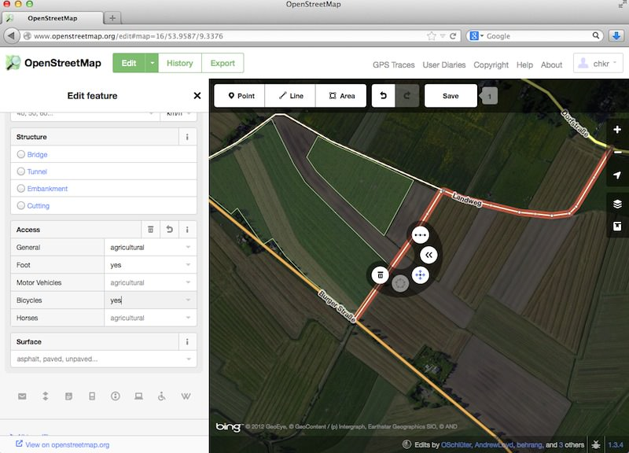
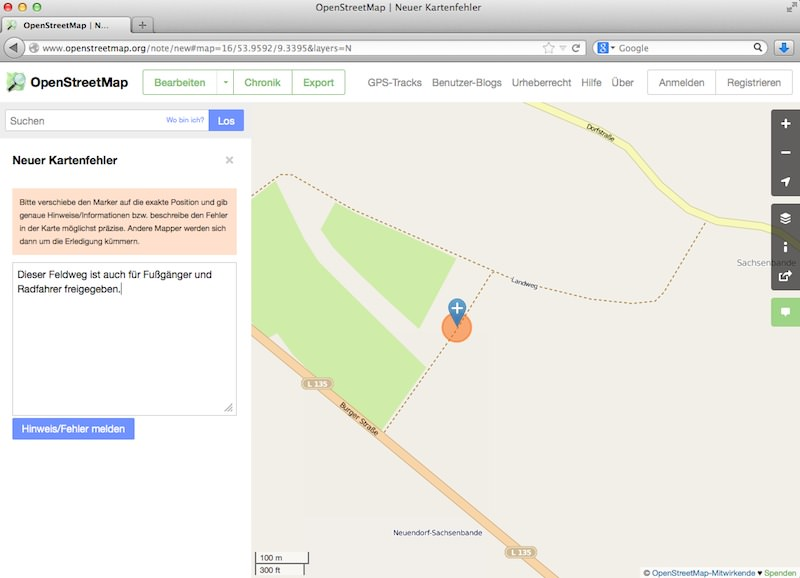
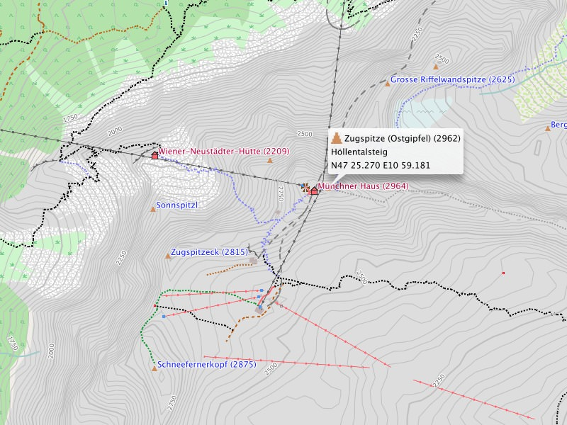

Unterstütze das Projekt finanziell:
Obolus für die Tee-/Kaffeekasse:
Wenn du aus den Freizeitkarten etwas Positives für dich ableiten konntest, dann denke doch einmal über eine kleine Unterstützung nach. Betrachte dies nicht als Kommerzialisierung, sondern eher wie eine Einladung zu einer "Tasse Tee und einem Stück Kuchen". Durch deine Spende hilfst du mit dieses Projekt weiterzuführen - Spendenmöglichkeiten findest du im Impressum.
Verbessere die Kartendaten:
Hilf mit die OpenStreetMap-Daten, und damit auch die Freizeitkarten, zu verbessern. Fehlende oder inkorrekte Kartendaten kannst auch du auf OpenStreetMap eintragen oder korrigieren. Dies geht viel leichter als du vielleicht glaubst. Melde dich hierzu auf OpenStreetMap an und versuche es einfach mal. Alle anderen Kartennutzer können so von deinem Wissen profitieren.

Editieren der Daten mit dem Online-Editor iD. Auf einem irrtümlich nur für landwirtschaftlichen Verkehr freigegebenem Feldweg werden Fußgänger und
Radfahrer erlaubt.
Melde Fehler auf der Karte:
Alternativ gibt es auf der OpenStreetMap-Webseite auch die Möglichkeit, Fehlermarkierungen zu setzen ohne sich vorher registrieren zu müssen. Vergiss aber nicht, einmal die Woche nach "deinen" Fehlermeldungen zu schauen - vielleicht gibt es ja Rückfragen.

Fehlermeldungen und Hinweise zur Verbesserung der Karten kannst du auch anonym erstellen.
Fehlt dir etwas:
Falls irgend etwas anders funktioniert oder aussieht (oder gar nicht funktioniert), lass' es uns wissen. Nur so können wir den Sachverhalt prüfen und vielleicht schon mit der nächsten Kartenausgabe beheben.

Kartendarstellung in BaseCamp: Die Zugspitze - der höchste Landpunkt Deutschlands (2962 Meter).
Du hast eine Spezialkarte abgeleitet:
Optisches Darstellung:
Das optische Erscheinungsbild der Karte wird durch ein sogenanntes Typfile definiert. Du kannst, mit etwas technischem Hintergrundwissen, das Erscheinungsbild der Karte grundlegend
verändern. Sei es, weil dir "dein" Design besser gefällt, oder du für ein spezielles GPS-Gerät Anpassungen vorgenommen hast. Stelle deine Arbeiten doch allen Nutzern zur Verfügung.
Eigene Karte:
Über die Entwicklungsumgebung der Karte ist es "leicht" möglich, aus den Freizeitkarten eigene oder spezielle Kartenvarianten abzuleiten. Stelle deine Spezialkarten doch allen Nutzern zur
Verfügung.